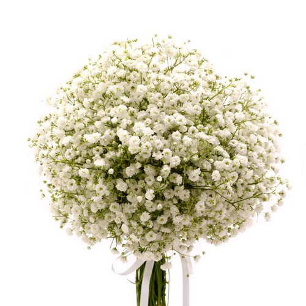

Martin + Katka = Murkovci
rovnica platí od 13. augusta 2016, 17:00
Predsvadobné pohostenie
u Babijožky
Dubová, Hlavná 121/158 Odchod autobusu o 16:30
GPS 48,3613308; 17,3333924
Obrad
Galéria Ignáca Bizmayera Kukučínová 15, Modra
GPS: 48,33570698; 17,307697
Hostina a Ubytovanie
Chata Fúgelka nad Dubovou Ubytovať sa môžete od 12:00
GPS 48,3752167; 17,3178066

Kvety
Veľké kytice nám prosím nenoste. Každý hosť môže priniesť „konárik“ gypsomilky – zapasuje k výzdobe – radi z toho spravíme jednu veľkú kyticu.
Dress code
Nevesta si želá, aby malo mužské osadenstvo hostí košeľu s dlhým rukávom a buď motýlik alebo nič. Ženích vraví, že u ženského osadenstva sú akceptovateľné šaty v dĺžke okolo kolien.
Posvadobný brunch
Ešte nevieme